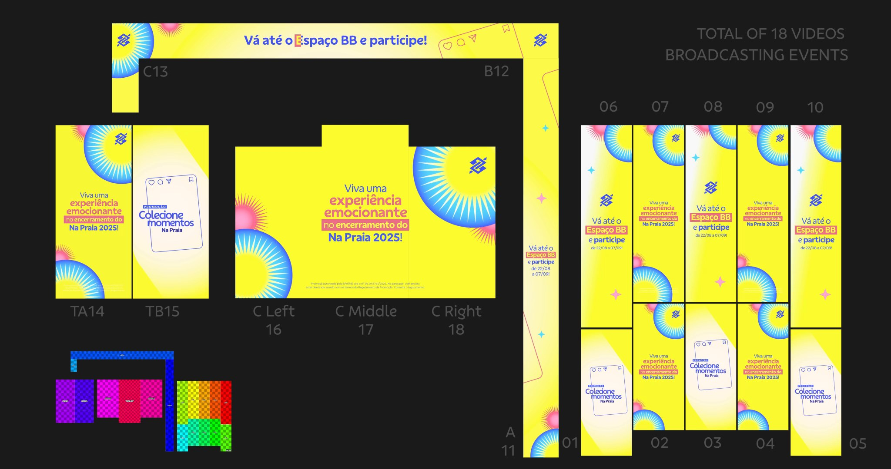

Mockup do palco montado sobre o desenho técnico, 30 segundos.
O palco tinha 18 superfícies de LED em 10 formatos, espalhadas por mais de 300 m². O vídeo ia rodar nos intervalos dos shows, junto com ações de outras marcas.
Desenhei o palco inteiro como uma imagem só e recortei os arquivos a partir dela. Uma forma que sai do arco aparece na torre ao lado.
Os vídeos rodaram entre os shows de 22 de agosto a 7 de setembro, num palco que recebeu mais de 100 atrações na temporada.
O arquivo-mestre
Os 18 vídeos saem desta composição.

O telão central: três arquivos rodando lado a lado.
Do guia do festival ao render
 01
01
Primeiro, entender o festival
O Na Praia 2025 foi a edição Itália: arcos no palco e leques de cor na identidade. Os raios de sol dos vídeos do Banco do Brasil vêm dessa forma, para a marca parecer parte da festa.
 02
02
Escrever para quem está dançando
A promoção se chamava Colecione momentos. Cada vídeo tem poucas palavras, bem grandes, que dá para ler mesmo dançando longe do telão.
 03
03
Animar uma vez, exportar 18 arquivos
Uma única timeline comanda todos os arquivos, e isso mantém os painéis sincronizados.
Onde rodou
Números do festival divulgados pelo Metrópoles em 2025. Eles descrevem o evento, não os resultados da campanha.